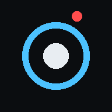

Unofficial. An independent viewer for Blue Iris. It is not affiliated with, endorsed by or supported by Perspective Software, the maker of Blue Iris. Blue Iris is a trademark of its owner. Please don’t contact Blue Iris support about problems with this page.
Private. This page talks only to your own Blue Iris server. No accounts, cloud services, tracking or analytics. Settings are saved in this browser on this device.
View-only. Recording, motion detection, AI and camera settings all stay in Blue Iris. Use Blue Iris or UI3 to change them.
Free software. Licensed under the GNU GPL v3: free to use, change and share. Shared or modified versions must stay under the same license, with source included. Provided as is, without warranty.
Credits. Video playback uses jmuxer (MIT License).